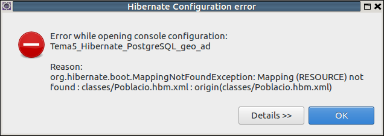
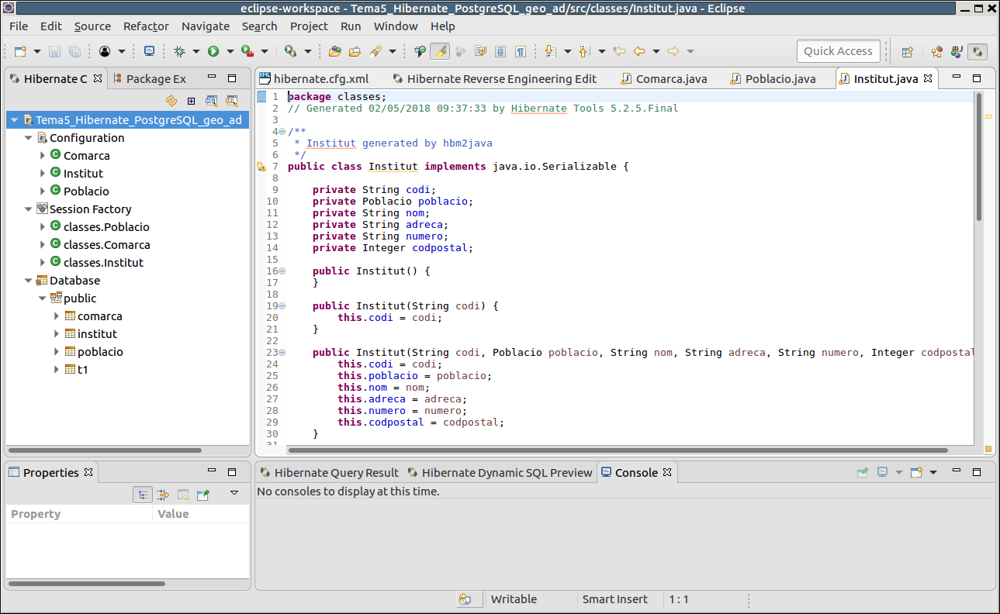
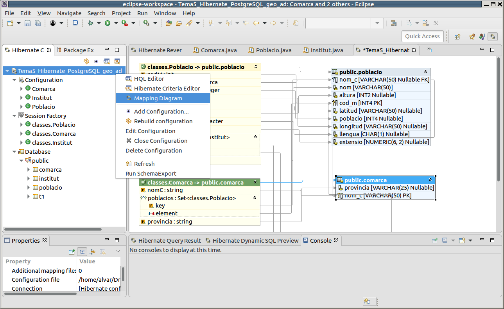

5.2 - Perspectiva d'Hibernate
Hibernate ens proporciona una perspectiva pròpia que ens serà molt útil per a inspeccionar les classes generades. Podrem veure les propietats de cada classe, també els camps de cada taula, i també la correspondència entre propietats dels objectes i camps de les taules de forma gràfica. I també ens permetrà inspeccionar les dades.
Canviem a la perspectiva d'Hibernate del del menú Window -> Open Perspective -> Other... -> Hibernate
A l'esquerra ens eixirà la consola generada a partir del fitxer de configuració (també la podríem generar ara). Quan la despleguem, podrem analitzar els objectes als quals ens dóna accés Hibernate.
NOTA IMPORTANT
En la instal·lació d'Hibernate sobre Eclipse 2019-06 dóna un error en la perspectiva d'Hibernate immediatament després de generar les classes, marcant com que no troba els fitxers de mapatge

Tanmateix ho podem solucionar senzillament reconstruint el projecte: Project -> Build All
En aquesta perspectiva tindrem 4 grans zones:
- Esquerra: navegador d'objectes, on podrem inspeccionar les classes generades (en Configuration i SessionFactory), i les taules de la Base de Dades en Database
- Centre: on s'obren les classes, fitxers de configuració i també les consultes que farem (ho veurem en el següent punt)
- Baix centre: a banda de la consola, quan executem una consulta ací es veuran els resultats
- Baix esquerra: Propietats de l'objecte seleccionat

Podem veure gràficament tota la correspondència entre les taules i les classes des de la perspectiva Hibernate. Tenim prou amb apretar amb el botó de la dreta sobre la Configuració i triar Mapping Diagram:

Llicenciat sota la Llicència Creative Commons Reconeixement NoComercial CompartirIgual 2.5